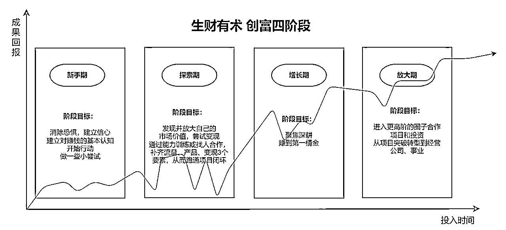

来源：https://shengcaiyoushu01.feishu.cn/docx/SnZDdyUsFoxTP0x9wCPcdAX5nWc
指南出品人：兰卡、二三
协助人员：生财有术团队、七小、易仁永澄、倪克寒
出品时间：2023 年 3 月 24 日
使用说明：帮助你高效使用生财有术，探索自己的生财之路

你好，朋友
欢迎来到生财有术第七期，和大家一起探索生财之路。
「生财有术」是一个交流、创造财富的社群。
我们创建于 2017 年，已运营 6 年，服务 40000 多圈友，致力于让每个普通人都可以用最简单、最有效的方式增长自己的财富，提供生财认知、路径、机会、资源，让每个人找到自己的生财创富之路。
在第六期，我们提供了这样的服务：
组织共创了 40000 多条赚钱信息，500 多条精华内容，带来了上千个具体真实前沿的赚钱机会；
发起了 83 场实战活动，累计带领 4.3W+ 人次下场实战，产出 1 W 份实战成绩单和 5500+ 份成长故事；
在 40+ 城市开放线下小局，共 98 场同城组局，累计 534 人深度链接；生财有术 2023 全国见面会，共计 1000+ 人参与。
……
6 年来，之所以能支持 40000 人生财，因为我们和生财圈友有三大信念：
赚钱没有一条统一、标准的成功路径。最终咱们能持续赚到钱、还能做得开心的关键，还是用自己的优势和特质来赚钱，而不是 100%模仿别人的生财之路。
生财社群愿意和你一起，找到属于你的特质、优势、擅长、热爱所生长出来的属于你的生财之路。
真实的突破之路，并不是一条每天都能看到回报、财富匀速增长的道路，而是一条充满波折的道路，但每一次踩坑，都会让你更接近正确的方向。
需要对自己有耐心、有信心，积极试错，等待量变引起质变的那一天。
任何人的生财之路都需要资源支持，包括但不限于思维、渠道、产品、流量、技能、人脉等资源，这些也正是我们和生财圈友一同共创的。
我们热烈欢迎你的加入，和我们一起生财，也让我们帮助更多人实现人生的更大自由。
只要你想，生财有术就在这里，等你来。

在正式启航之前，我们根据过往的圈友成长经验，建议你先完成 2 个小作业。
作业一：
根据下图，定位你所处的生财阶段，跳转到你所处阶段的那个章节，根据对应的建议，高效探索你的生财之路

点击以下章节引导，即可跳转：
02 新手期：建立信心，开始行动
03 探索期：持续试错，挖掘价值
04 增长期：找到方向，收入增加
05 放大期：合作共赢，孵化项目
作业二：
为了更好地向你提供精细化的服务和产品，请填写生财有术第七期会员信息登记表
👉点击这里，填写《生财有术第七期会员信息登记表》
本会员信息仅用于生财有术团队提供更加深度的会员服务，未经授权，不会透露给任何第三方，请放心填写。
如果你愿意，接下来就开始探索你的生财之路吧～

使用说明
下述内容中提到的链接，需要先用微信登录知识星球后才能打开。
打开链接时会有提示，按要求登录即可。
电脑端浏览会比手机端更流畅清晰，推荐使用电脑端阅读。

一、新手期特征
二、突破点：保持大脑开放，提升信心和能量
三、行动目标与路径
推荐解法 ①：因为看见，所以相信
在搜索站搜索新手的赚钱故事，看到很多起点差不多的人，也可以一步步成长为赚钱高手，每一个普通人都有赚到钱的机会。
推荐解法 ②：靠近高能量的伙伴，提升能量
成为生财志愿者，在合作中交一起交流赚钱的朋友，和大家一起成长。
推荐阅读：
《加入生财的第 145 天，成功召唤神龙亦仁！分享我在生财破圈成长的心路历程》
《我分析了 40W 评论数据！挖掘出了生财小白的 7 个痛点问题！》
《生财破圈链接方法论》
《初阶志愿者参加航海的正确打开方式》
《第一次航海领队之旅，让“小透明”在生财点亮了萤火之光》
推荐解法：清理认知误区，学习高手思维
在搜索站搜索“赚钱 思维”、“普通人 思维”、“商业思维”等关键词，了解阻碍普通人赚钱的思维误区，觉察自己之前是否也存在类似思维。
推荐阅读：
《如何通过分析成功案例，帮自己建立赚钱清单》
《在生财有术，普通人如何从 0 到 1，培养赚钱思维》
《思考了 4 个月，用万字长文，盘点阻碍我赚钱的 18 个认知误区！》
《学习和赚钱是什么关系？》
推荐解法：拆解自己看得懂的项目
选择门槛较低的航海，阅读航海手册，了解一个项目从头到尾是怎么做的，如何变现，可以做笔记拆解；
选择性阅读自己感兴趣的精华帖，拆解更多项目是如何赚钱的。如果不太理解，可以参加「精华共读」航海，和圈友互相交流，对看不懂的内容提问。
推荐阅读：
《看了 100+精华帖后，我梳理了一套赚钱的知识体系（超全新人指南！) 》
《又看了 100+精华帖，又一篇万字长文，这次我建立了「项目知识体系」》
推荐解法：开始行动，赚到第一块钱
参与门槛较低的航海实战，如「精华共读」、「风向标共读」、「朋友圈运营」，以能做出一些行动为目的，而不是立刻赚钱为目的，通过连续参加 2-3 期类似项目的航海，来逐渐积累做项目的手感，从而赚到第一块钱。
适合新手开始行动的项目：
精华共读
风向标共读
朋友圈运营
时间管理
资料整理
……
上述推荐，均为 2023 年 2 月航海中已完成航行的实战项目，可以作为新手选择的一些建议，你在后续航海中可以多多关注类似项目。
以上提到航海均已沉淀资料，你可以点击链接，跳转查看。

使用说明
下述内容中提到的链接，需要先用微信登录知识星球后才能打开。
打开链接时会有提示，按要求登录即可。
电脑端浏览会比手机端更流畅清晰，推荐使用电脑端阅读。

一、探索期特征
二、突破点：持续试错，打磨优势，发现和放大自己的市场价值
三、行动目标与路径
推荐解法：结合自身价值点，积极破圈
以真诚利他的心态在星球内进行分享，如项目情报、实操心得或思维认知。
在参与航海、线下小局、志愿者等活动时主动介绍和互动，让他人在找某领域专家时就能想到你。
推荐阅读：
《加入生财的第 145 天，成功召唤神龙亦仁！分享我在生财破圈成长的心路历程》
《生财破圈链接方法论》
《生财有术星球加精规则调整》
推荐解法：积极主动地链接高手，寻找合作机会
比如，有运营能力，可以帮助高手运营项目，获得分成；
有内容能力，可以帮助高手整理内容，从而交流学习；
有执行能力，可以帮助高手做项目，成为团队成员。
推荐阅读：
《加入生财的第 145 天，成功召唤神龙亦仁！分享我在生财破圈成长的心路历程》
《生财破圈链接方法论》
《生财有术星球加精规则调整》
推荐解法：盘点自身资源，匹配变现方式
比如，自己有售货渠道，可以在星球找到有货源的圈友，合作销售他人货品；
有自媒体账号，可以对接圈友的产品来卖；
有货源，可成为快团团、抖音精选联盟、视频号供货商等。
资源对接入口：
进入 生财有术星球（点击前往），点击菜单栏 #资源对接 即可查看全部。
推荐解法 ①：阅读精华帖、风向标、航海手册，尝试新项目
阅读精华帖、风向标或航海手册等信息，列出自己感兴趣的项目，开始尝试；
在执行过程中，如果遇到难点与阻碍等，可以在搜索站搜索关键词，找到参考答案。
推荐解法 ②：参与航海实战，尝试新项目
持续参与航海实战，在能够合理分配精力的前提下，结合自身特长或优势选择多个实战项目，或者感兴趣的赚钱技能，扩大试错选项；
调整心态，10 个项目中，能成一两个，就是很好的事情了；
认真写航海日志，记录自己在试错过程中的心得，方便回溯复盘，积累项目经验，发现自己的优势和适合的赚钱模式。
如何高效搜索精华帖、风向标、航海栏目等内容：

使用说明
下述内容中提到的链接，需要先用微信登录知识星球后才能打开。
打开链接时会有提示，按要求登录即可。
电脑端浏览会比手机端更流畅清晰，推荐使用电脑端阅读。

一、增长期特征
二、突破点：聚焦深耕，赚到第一桶金
三、行动目标与路径
推荐解法 ①：
主动链接领域内高手，获得更多个性化辅导和交流机会。
推荐解法 ②：
参与和组织线下小局，和高手见面深度沟通，互相传递能量。
推荐阅读：
《加入生财的第 145 天，成功召唤神龙亦仁！分享我在生财破圈成长的心路历程》
《生财破圈链接方法论》
《聚是一团火》
《生财上海同城活动复盘分享》
推荐解法 ①：
以真诚利他的心态在星球内进行分享，如项目情报、实操心得或思维认知。
推荐解法 ②：
通过内容分享被生财官方团队挖掘，成为航海教练，参与到航海手册编写、分享、答疑中，从而打磨自己的内容作品，链接同频圈友。
推荐阅读：
《生财有术星球加精规则调整》
推荐解法 ①：
获得龙珠，和其他龙珠圈友链接，高质量交流合作。
推荐解法 ②：
报名加入航海家俱乐部，与生财有术有更深度的合作，通过项目孵化、深度小局等形式，参与更多项目放大和投资。
推荐阅读：
《航海家俱乐部开放报名》
《航海家俱乐部：进高阶圈参与项目孵化》
《龙珠/龙珠碎片 如何获得&如何使用？》

使用说明
下述内容中提到的链接，需要先用微信登录知识星球后才能打开。
打开链接时会有提示，按要求登录即可。
电脑端浏览会比手机端更流畅清晰，推荐使用电脑端阅读。

一、放大期特征
二、突破点：从单兵作战到组团打怪
三、行动目标与路径
推荐解法 ①：
获得龙珠，和其他龙珠圈友链接，高质量交流合作。
推荐解法 ②：
报名加入航海家俱乐部，与生财有术有更深度的合作，通过项目孵化、深度小局等形式，参与更多项目放大和投资。
推荐阅读：
《航海家俱乐部开放报名》
《航海家俱乐部：进高阶圈参与项目孵化》
《龙珠/龙珠碎片 如何获得&如何使用？》
推荐解法：
通过航海家俱乐部项目路演/风向标/精华帖，找到更多优质新项目，发展第二曲线。
推荐解法 ①：
以真诚利他的心态在星球内进行分享，如项目情报、实操心得或思维认知。
推荐解法 ②：
通过内容分享被生财官方团队挖掘，成为航海教练，参与到航海手册编写、分享、答疑中，从而打磨自己的内容作品，链接同频圈友。
推荐阅读：
《生财有术星球加精规则调整》

使用说明
加入生财有术社群之后，我们会根据你的生财能力发展阶段、个人特征、有意向的赚钱发展路线图等要素，为你提供发展建议。
那时，你可能需要各种信息、机会、训练、人脉、交流、激励、反馈的支持。
所有支持，我们用了 7 年的时间为你都准备好了。
在这里，先让它们列队让你检阅，等待后续使用时，你可以很容易地找到它们。
一个小建议：
你可以根据自己的兴趣和喜好，点击查看那些吸引你的链接～
不过，老话说得好：好酒，可不要贪杯啊！
千万不要在我们的资源里喝醉了，或者觉得乱花渐欲迷人眼。
我们慢慢来，记得，所有资源都是来服务你的，而不是来干扰你的。
我们的建议是：有需要，再使用，这样就不会因为丰富而导致焦虑啦～
PS：下述内容中提到的链接，需要先用微信登录知识星球后才能打开。打开链接时会有提示，按要求登录即可。

无规矩不成方圆。
一个优良的社群环境，离不开里面每一个人的支持与遵守规则。
为了让几万名圈友能在这里获得更好的服务，我们与所有圈友约定了几个价值观：
在这些价值观体系下，我们鼓励这些行为：
同时我们不鼓励这些行为：
关于盗版：
盗版属于侵犯知识产权。作为一个知识产出的社群，盗版的行为我们坚决抵制。一经发现会被拉黑，踢出圈子。
发帖规则：
希望每一个新来的朋友都能了解以上群规，让我们优雅的一起生财有术！

是什么
精华帖，是生财高手分享的实战赚钱经验精选，比市面上至少早半年，算得上是一部普通人的真实赚钱史。
6 年累积 3900+ 篇，对会员全部开放。
怎么用
建议先从自己感兴趣的内容看起，可以多花点时间深度阅读和思考。
👉点击这里，查看第六期 | 精华帖合集
在哪里

是什么
赚钱相关的最新情报和玩法，主打短、平、快。
第六期共创 13000+ 条风向标，星主亦仁从评选出 2000+ 条具体的赚钱机会，即中标风向标。
怎么用
熟读这 2000 条风向标，搞清楚这些钱是怎么赚的。
👉点击这里，查看第六期 | 风向标中标合集
在哪里

是什么
1 年 5 场航海实战，每期提供 20+ 主题，包含项目实操、赚钱技能、同城链接 3 大主题。
通过航海资料包、高手分享、陪伴体系等形式，第六期航海已有 4.3w 人次下场实战。
怎么用
选择自己感兴趣或者至少不抗拒的项目，跟着教练一步步实操，赚到工资外的第一块钱。
报名需要缴纳保证金，成功上岸后退还。
👉点击这里，查看第六期 | 航海实战资料
👉点击这里，查看第六期航海实战 | 高手分享合集
👉点击这里，查看第六期航海实战 | 生财好事合集
在哪里

是什么
航海家俱乐部是生财有术的高阶社群，项目孵化器。
汇聚了一波拿到实战结果的创业者，以更深度的合作为运营目标，让更多的项目从 0-1，甚至从 1-N 发生。
怎么用
生财将提供优质项目复制放大，人、产品和流量等资源深度连接与合作，项目孵化，社群基金等支持。
目前有孵化想法的项目：生财风向标，生财朋友圈（抖音账号），抖音 SEO，10w+级 ChatGPT 应用中国社区，海外 SaaS 孵化器，深耕版航海计划、各行业垂直交流群，快团团供应链，AI 绘画训练营等。
在哪里
航海家俱乐部目前为审核制，需要已经有结果的圈友先加入进来，运营稳定后，将开放邀请推荐制。如有兴趣，可询问生财有术服务官鱼丸。
详情可阅读：《航海家俱乐部开放报名》

是什么
生财有术会在星球内发布同城小局的主题与活动信息，各地圈友可以进行组织与参与。该活动旨在链接圈友，保证交流的深度和效率。
2 月航海同城小局内测版数据为：在 40+ 城市开放，共进行 98 场，累计 534 人参与。
怎么用
怀着开放、利他的心态，按时参与同城小局的交流，开拓眼界，获得更多深度讯息。
在哪里
目前同城小局不定期开放，大家可以实时关注航海实战的项目信息，以及星球帖通知，按要求完成报名。

有很多圈友一直在默默帮助生财有术成长，我们希望通过龙珠这种方式，记录并感谢他们的支持。
有了龙珠后，可以享受很多专属权益，如参加龙珠圈友专属见面会，参与会员日专属福利抽奖，有机会被邀请加入航海家俱乐部，参与生财有术社群项目收益年度分红，兑换生财有术门票等。
龙珠具体权益和获取方式见：《龙珠体系介绍》

每一个提问都值得被认真对待，每一个提问都值得被认真解答。为了更好地帮助大家解决个性问题，不让无关信息干扰到大多数圈友的信息流，我们开设了 #问题求助 板块。
同时成立了 200 人的互助小分队，会尽力去帮助大家解决创业、赚钱、工作、生活中遇到的各种问题。
入口：进入 生财有术星球（点击前往）点击菜单栏 #问题求助 即可查看全部。
如何提问：进入 生财有术星球（点击前往）发布求助内容，添加 #问题求助 标签即可。

“我能提供什么，我需要什么...”
为了让大家能更好的完成价值互换，和找到更多合作的机会，我们在星球里开放了 #资源对接 专栏。如果你有着自己独特的资源，又或是有一些个人的需求，可以在这个专栏下提交你的需求。
入口：进入 生财有术星球（点击前往）点击菜单栏 #资源对接 即可查看全部。
如果有合适的圈友看到后，会主动联系你。
需要注意的是，圈友之间涉及到钱财交易，特别是投资行为，请务必仔细判断。